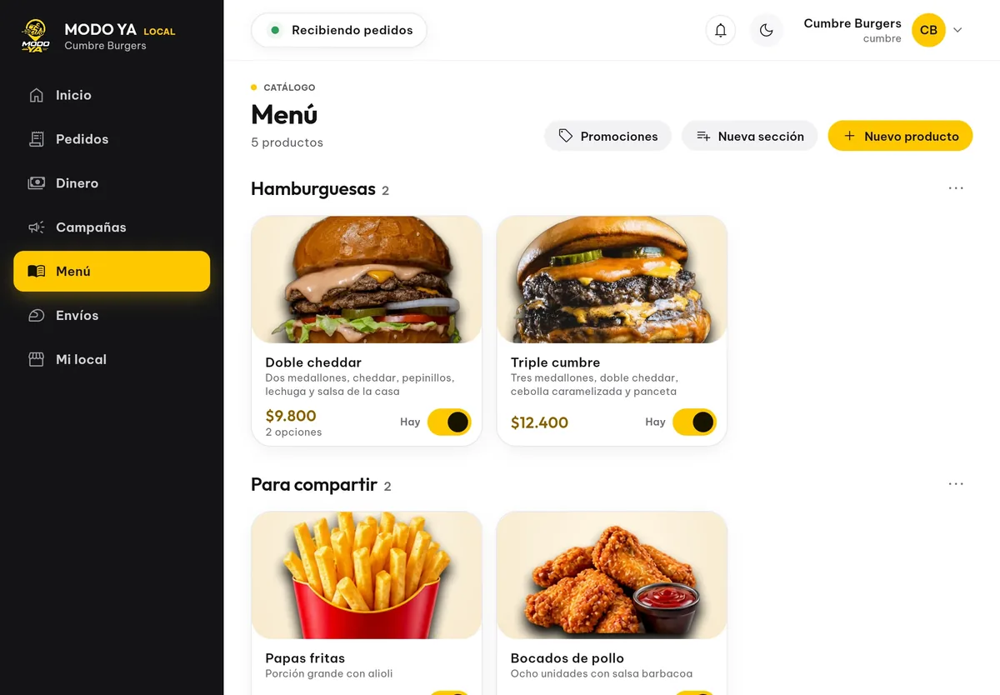

Pantallas capturadas de las apps reales con datos de ejemplo: los locales, las personas y los pedidos son ficticios.
En un minuto
Problema
En Malargüe, los locales venden por WhatsApp o teléfono y cada uno resuelve el envío solo. El cliente no puede ver qué está abierto, pagar sin efectivo ni saber dónde está su pedido.
Enfoque
Traté cada pedido como un sistema con cuatro roles. Dos apps comparten un mismo motor de envíos, el servidor decide quién es quién y cada regla que la clienta no había definido pasó a ser configurable en lugar de inventada.
Resultado
Dos apps y un sitio de lanzamiento sobre un mismo sistema de diseño, 15 versiones en dos meses y una revisión completa con 15 hallazgos ordenados por gravedad antes de abrir al público.
01El desafío
Un pueblo con ganas de pedir, y sin app para hacerlo.
La clienta quería una plataforma local para dos cosas: que los vecinos pidan desde una app y que los locales usen una flota de riders para los pedidos que ya reciben por teléfono o WhatsApp.
Pensarlo como “una app de delivery” habría resuelto la pantalla del cliente y dejado a las otras tres personas improvisando. Cada pedido pasa por un cliente, un local, un rider y la administración, y el rol de la cuenta decide qué pantallas ve cada uno.
Quiénes participan en un pedido
Rol
Qué necesita
Dónde
Cómo entra
Cliente
Pedir comida o un mandado, pagar sin efectivo, seguirlo en vivo
MODO YA
Se registra solo
Local
Recibir pedidos o pedir un rider para los propios; actualizar menú y precios rápido
MODO YA
Lo da de alta la administración
Rider
Aceptar envíos cercanos y saber cuánto cobrar
MODO YA Rider
Lo da de alta la administración
Administración
Aprobar cuentas, fijar tarifas y ver la operación
MODO YA
Se crea a mano
Objetivos de negocio
Una sola plataforma local para pedidos y envíos
Que los locales se sumen sin dejar WhatsApp
Reglas que la clienta pueda cambiar sin un desarrollador
Restricciones
Un equipo de dos personas
Ubicación del rider en segundo plano: el permiso que más revisan las tiendas
Reglas de negocio sin definir al empezar
02Investigación y descubrimiento
Preguntar primero por lo más caro de cambiar.
Antes de construir, todas las preguntas abiertas fueron a un documento para la clienta, ordenadas por cuánto bloqueaba cada una.
Primero, las que cambian cómo se construye: ¿el envío se paga en efectivo o digital?, ¿qué documentación se le pide a un rider?, ¿qué pasa con un pedido cancelado? Después, los números que se podían ajustar desde el panel. Cada pregunta explicaba por qué importaba y comparaba las opciones, así la clienta decidió primero lo más difícil de deshacer.
Evidencia
Lo que se sabía
Los locales ya venden por WhatsApp y teléfono
Cada uno resuelve el envío como puede
Es probable que las tiendas rechacen la ubicación en segundo plano dentro de una app de clientes
Supuestos
Lo que se diseñó como hipótesis
Los locales no van a dejar WhatsApp por una app nueva
Ver tiempo y costo de envío desde el principio ayuda a elegir
Una prueba de entrega evita discusiones
Pendiente
Lo que falta confirmar con uso real
Cuánto tarda un rider en aceptar un envío
El radio de búsqueda y la tarifa por kilómetro correctos
El comportamiento con pedidos reales: la plataforma está en prelanzamiento
03Recorridos y flujos
Cuatro personas en cada pedido.
Cliente
Local
Rider
Administración
AdministraciónAntesAprueba cuentas, fija tarifas y radio de búsqueda
1ClienteArma el pedidoTiempo y costo de envío visibles desde el primer listado
2ClienteConfirma y pagaDirección y medio de pago en una pantalla
3LocalLo preparaLos estados se actualizan para todos
LocalSegunda entradaPide un rider para un pedido que llegó por WhatsApp
4RiderAcepta un envío cercanoSabe cuánto cobrar
LocalLo entrega al riderCon un código de retiro
5RiderEn caminoVisible en el mapa del cliente
ClienteLo sigue en vivoCuatro estados claros
6ClienteDa el código de 4 dígitosDespués califica la entrega
RiderCierra la entregaSólo con el código
AdministraciónDuranteSupervisa la operación
Cuando algo sale mal
En un producto de envíos, la confianza se gana o se pierde fuera del camino ideal. Estas son las situaciones que el diseño tenía que responder y los huecos que encontró la revisión.
Excepciones y cómo las resuelve el producto
Situación
Respuesta
Estado
Figura entregado, pero no llegó
El rider sólo cierra el pedido con el código del cliente
Diseñado
Nadie acepta un envío
Radio y tiempo para aceptar se cambian desde el panel, sin otra versión
Configurable
Alguien se registra como local o administración
El rol viene del servidor, nunca del formulario de registro
Diseñado
El cliente elige transferencia
La app prometía pasar un alias que ninguna pantalla mostraba
Hallado en la revisión
Se corta la red en el panel de administración
Mostraba ceros y un cartel verde, sin ningún error
Las alternativas que descartamos y lo que costó cada elección.
Problema
¿Una sola app para todos?
El rider necesita ubicación en segundo plano. Dentro de una app de clientes, lo más probable es que rechacen la publicación.
Decisión
Dos apps sobre un sistema
MODO YA para clientes, locales y administración; MODO YA Rider aparte. El sistema de diseño y la lógica viven en paquetes compartidos.
Qué costó: dos apps para publicar y mantener a la par.
Problema
¿Sólo pedidos por la app?
Pedirles a los locales que dejen los canales por los que ya venden era perderlos.
Decisión
Marketplace y cadetería en un mismo motor
El local recibe pedidos por la app o pide un rider para uno que llegó por otro lado. Los dos usan la misma asignación por cercanía.
Problema
¿Quién confirma que llegó?
Sin una prueba, un pedido “entregado” que no llegó termina en discusión.
Decisión
Un código en cada entrega
Un código de retiro entre local y rider, y uno de 4 dígitos entre cliente y rider.
Qué costó: un paso más en la puerta.
Problema
¿Que cada uno elija su rol?
Cualquiera podría decir que es local o administración y ver lo que no le corresponde.
Decisión
Lo asigna el servidor
Los clientes se registran solos. Locales y riders reciben credenciales generadas por la administración.
Qué costó: locales y riders no pueden darse de alta solos.
Problema
¿Inventar los números que faltan?
Tarifa por kilómetro, radio de búsqueda y tiempo para aceptar no estaban decididos.
Decisión
Todo configurable
Los valores se cambian desde el panel. El kilómetro adicional arrancó en $0 a propósito, para no inventar un cobro que nadie había definido.
Qué costó: más ajustes para explicarle a la administración.
05Sistema de diseño
Negro, amarillo y un pedido a la vista.
El rediseño llevó la identidad de la marca a tokens, para que las dos apps y el sitio cambien juntos.
Color
Amarillo#FFC800
Amarillo pálido#FFF3C4
Ámbar, para precios#8A6100
Negro#141416
Texto gris#5C5C66
Superficie#F1F1F4
Error#C22C2C
Éxito#2E9E5B
Auditoría de contraste
Auditoría de contraste de los colores del producto
Combinación
Muestra
Relación
Resultado
Negro sobre amarillo (botones)
12,03:1
AAA
Amarillo sobre negro
11,83:1
AAA
Precios en ámbar sobre blanco
5,54:1
AA
Texto gris sobre blanco
6,60:1
AA
Error sobre blanco
5,69:1
AA
Éxito sobre blanco
3,41:1
Sólo texto grande e íconosEl texto usa un verde más oscuro sobre uno pálido
Reglas que lo mantienen consistente
El amarillo lleva acciones, precios y avance; el resto queda en grises
Un botón principal por paso, al pie de la pantalla
Los mismos cuatro estados en las dos apps: confirmado, en preparación, en camino, entregado
Cada texto necesita un flujo detrás que cumpla lo que dice
06Solución final
De abrir la app a saber quién está en la puerta.
20:14ElegirLa dirección de entrega siempre a la vista; primero, las ofertas de hoy.
20:14ConfirmarProductos, dirección en el mapa y total con envío, en una pantalla.
20:14EsperarEstado, tiempo estimado y mapa desde el primer minuto.
20:14SeguirEl recorrido del rider y el código para entregar.
20:14CerrarEl detalle queda, con una forma de reclamar.
El mismo pedido, visto por el local
Los pedidos pasan por tres grupos: en cocina, listos y en camino. Cada tarjeta tiene un solo botón, que dice el paso siguiente.
Pedidos“Listo: llamar rider” inicia el envío desde la misma tarjeta.

MenúQue algo se termine es un interruptor en el mismo producto.
El rider, una acción por vez
Cuatro pasos: ir, retirar, salir, entregar. Hasta que el rider acepta, los datos del cliente no se muestran.
20:14ConectadoLa ubicación se comparte sólo mientras está conectado.
20:14RetirarDónde, qué y cómo llegar.
20:14EntregarLa app avisa que hay que pedir los 4 números.
20:14ListoLa ganancia queda registrada en el momento.
Administración, qué está pasando ahora
Mapa en vivoEnvíos, locales abiertos, riders conectados y una lista de lo que necesita una decisión.
Pagos
Tarjeta dentro de la app con Mercado Pago. La transferencia se sacó después de que la revisión encontró una promesa que el flujo no podía cumplir.
MODO YA Plus
Suscripción mensual con envío gratis, que se renueva sola y se da de baja de un toque.
Avisos
Notificaciones push, un sonido por rol y recordatorios de carrito abandonado.
Mandados
El cliente también puede pedir un rider para llevar o buscar algo.
Un sitio de lanzamiento que se recorre como un envío
El sitio le habla a tres públicos: vecinos, locales y personas con moto. Está organizado como la ruta de un rider: una línea punteada acompaña el scroll y cada sección es una parada.
modoya-landing.vercel.appTres caminos desde la primera pantallaCliente, local o rider. El botón principal dice “Próximamente” porque la plataforma está en prelanzamiento.modoya-landing.vercel.app
Servicios separados por públicoCada tarjeta termina en una acción.modoya-landing.vercel.appPreinscripciónUn selector entre local y rider, beneficios a la izquierda y un formulario corto a la derecha. El contacto sigue por WhatsApp, el canal que ya usan.
07Implementación y colaboración
Dos personas, un mismo proceso de publicación y una lista de hallazgos.
Diseño y desarrollo compartieron la misma fuente: tokens y componentes en paquetes comunes, y reglas de acceso en la base de datos.
Cada versión nueva se publica automáticamente desde el repositorio y las apps se actualizan solas en Android y Windows
55 migraciones de base de datos, con permisos definidos por rol
Antes de lanzar recorrimos toda la app buscando huecos entre lo que dicen las pantallas y lo que el sistema puede cumplir: 15 hallazgos, ordenados por gravedad
Lo incompleto casi nunca está en el código a medio escribir, sino en el hueco entre lo que la pantalla promete y lo que el sistema hace.
08Resultados e impacto
Lo que se puede verificar hoy.
2 + 1apps y un sitio de lanzamiento, con un solo sistema de diseño
4roles con pantallas y permisos propios
15versiones publicadas entre septiembre y octubre de 2026
15hallazgos ordenados por gravedad antes del lanzamiento
No hay pedidos, tiempos de entrega ni retención porque la plataforma todavía no abrió al público. Es lo primero a medir.
09Aprendizajes y próximos pasos
Lo que haría antes la próxima vez.
Aprendizajes
Un marketplace tiene cuatro usuarios, no uno: cada decisión se mira desde los cuatro lados
Ordenar las preguntas por cuánto bloquean hizo que la clienta decidiera primero lo más caro de cambiar
Haría la revisión de pantallas contra sistema en cada hito, no sólo antes de lanzar
Próximos pasos
Cerrar los hallazgos pendientes, empezando por los de gravedad alta
Medir cuánto tarda un rider en aceptar y ajustar el radio de búsqueda
Sumar pantallas para reclamos y para que riders y locales vean sus liquidaciones